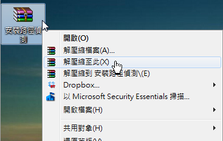

※說明：
1. AutoCAD顧問 - ATStruCAD結構外掛程式，只能「安裝授權」在一部電腦之中，僅可安裝同一部電腦中的一套「AutoCAD版本」。
2. 目前可支援 AutoCAD 2016~2024 版本（Windows作業系統），使用者可以選擇常用的AutoCAD版本進行「安裝路徑偵測步驟」。
3.用戶執行「安裝路徑偵測步驟」回傳「路徑偵測檔」後，接著可以安排網路「遠端安裝主程式」到用戶的電腦。
步驟一：將「安裝路徑偵測AT.zip」解壓縮至電腦桌面。

步驟二：開啟「安裝路徑偵測AT」資料夾。

步驟三：使用【滑鼠左鍵】→ 選取「Version PathAT」檔案。

步驟四：按住【滑鼠左鍵】→ 拖曳至需要安裝的「AutoCAD 版本」。

步驟五：拖曳到「AutoCAD 版本」視窗中之後 → 放開【滑鼠左鍵】。

步驟六：「AutoCAD 2016以上版本」→ 點選「載入」即可。

步驟七：畫面顯示「儲存記錄檔」視窗 → 指定儲存位置 →「存檔」。

步驟八：接著畫面顯示「AutoCAD顧問_結構外掛程式 - 安裝路徑偵測成功」訊息。

步驟九：將「VersionPathAT.dll」記錄檔 → 壓縮為「ZIP格式」，再使用電子郵件回傳至論壇管理員（郵件主旨請加入論壇會員帳號）。

論壇信箱： kv1012tiger.kc@gmail.com
補充：如果寄信被擋，可以改用免費空間上傳，再把下載網址給我們即可
免費空間說明： https://www.autocad-tw.com/t18219-topic